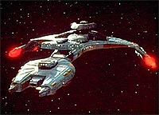
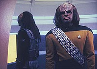
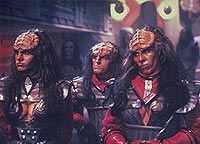
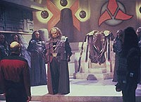
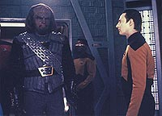

|
MANCHETE
DO EPISDIO
Worf
entra em conflito interno sobre sua
herana em meio a guerra civil Klingon
Episdio
anterior | Prximo
episdio
Sinopse:
Data Estelar: 44995.3.
A Enterprise vai at o planeta natal dos Klingons, onde Picard deve
concluir a cerimnia de posse de Gowron, o novo lder do Alto
Conselho. No caminho, a nave interceptada por um cruzador Klingon
com o novo chanceler a bordo.
Ele informa Picard que a famlia Duras est preparando uma guerra
civil para dividir o Imprio. Duras, o nico outro desafiante na
disputa pelo poder, foi o responsvel pelo banimento de Worf,
considerado culpado pela acusao de que seu pai, Mogh, teria
conspirado com os Romulanos.
Gowron vai ao encontro de Picard para que ele bloqueie a ao da
famlia Duras dentro do Conselho, mas o capito da Enterprise
ressalta que tal atitude estaria fora de sua jurisdio.
 Worf
pede a Gowron que restaure a honra de sua famlia, mas o chanceler
no aceita, para evitar criar mais conflitos entre os membros do
Conselho, que so francamente favorveis a Duras. Chegando ao
planeta natal, Worf pede uma licena para se encontrar com seu irmo,
Kurn, que revela sua pretenso de criar uma terceira faco para
tomar o poder de Gowron e da famlia Duras. Worf, no entanto,
ordena Kurn a permanecer leal liderana Klingon, oferecendo um
plano para apoiar Gowron em troca da restaurao do nome de sua
famlia.
Quando Picard e Gowron aparecem diante do Alto Conselho para
executar a cerimnia, o evento interrompido por um anncio de
Lursa e B'Etor, as irms de Duras, apontando que h um desafiante
para Gowron: Toral, um adolescente que filho bastardo de seu irmo.
A maioria do Conselho vota a favor do desafio, e a questo passa ao
rbitro da sucesso, Picard. Mais tarde, as irms Duras se
encontram secretamente com um general Romulano e uma misteriosa
mulher para discutir seus planos de retomada do Imprio.
As irms convidam Picard a visitar sua casa, para persuadi-lo a
aceitar o desafio de Toral, apontando que isso serviria aos
interesses da Federao. Embora Picard acabe rejeitando o pedido
da famlia Duras, os membros do Conselho decidem apoiar Toral,
atirando o Imprio em uma guerra civil.
 Diante
da crise, Worf v a oportunidade perfeita para encontrar Gowron e
oferecer seu apoio, que inclui vrias naves de guerra Klingons sob
o comando de Kurn. Gowron insiste para que Worf pea a ajuda da
Federao, mas o oficial se recusa a misturar sua vida na Frota
Estelar com as questes de poltica interna do Imprio. Enquanto
Gowron testa a lealdade de Worf, a nave imperial comea a sofrer um
ataque por rebeldes liderados pela famlia Duras.
Picard observa a batalha da Enterprise, at receber um pedido de
socorro da nave de Gowron. No querendo atirar a Federao em uma
guerra Klingon, o capito ordena que a Enterprise abandone a regio,
deixando Worf para trs.
Graas chegada providencial de uma nave sob o comando de Kurn,
Gowron consegue sobreviver. Aps a batalha, ele se prepara para
realizar sua cerimnia de posse. Nela, o novo lder do Conselho
restaura a honra de Worf. Os dois Klingons voltam Enterprise para
pedir a ajuda de Picard e da Federao na soluo da crise do
Imprio.
O capito recusa-se a interferir e ordena Worf a voltar a seu
posto, j que a Enterprise deixaria o planeta natal do Imprio
imediatamente. Dividido, Worf abandona a Frota Estelar e decide se
juntar tripulao da nave de Gowron, para ajud-lo a vencer a
guerra civil e se firmar como novo chanceler do Imprio Klingon.
Continua...
Comentrios:
Um dos maiores
dilemas que existem quando se est produzindo uma srie de televiso
definir onde estar o seu enfoque: nos personagens ou no enredo
dos episdios. A Nova Gerao, a partir do terceiro ano,
optou claramente por trazer o enfoque para os personagens --uma
corrente que marca o jeito "moderno" de produzir para TV,
contrrio ao que foi adotado durante a Srie Clssica.
Entretanto, h algumas vezes em que o escritor consegue criar um
elo to grande entre a histria e os personagens que enfocar um
necessariamente faz com que o outro cresa tambm. Um desses casos
felizes "Redemption", obra de Ronald Moore.
 O
roteirista, que o maior responsvel pelo nascimento dos Klingons
como personagens complexos (caracterizao trocada pelo antigo
esteretipo de inimigo cruel, sanguinrio e sem princpios,
aplicada espcie durante toda a Srie Clssica),
consegue, ao mesmo tempo, trazer uma nova dimenso sociedade
imperial Klingon e mostrar um pouco mais da psique de nosso espcime
predileto, o tenente Worf.
Alm de ser um primor de continuidade (a histria recupera
diversos elementos desenvolvidos desde a temporada anterior, com o
banimento de Worf, conforme visto em "Sins of the Father"),
o episdio d um insight extremamente detalhado da politicagem
Klingon. O conflito entre duas "casas" (a de Gowron e a de
Duras) est muito claro, e as motivaes por trs dele
transcendem o prprio episdio, o que s ajuda a estabelecer o
realismo da situao.
O preo a ser pago por esse primor foi o esquecimento dos outros
personagens regulares. Apenas Worf e, em menor escala, Picard
participam dos eventos de forma decisiva. No que isso tenha sido
ruim. Muito ao contrrio, especialmente interessante observar os
conflitos de interesses se formando em torno desses dois homens. O
intercmbio de opinies entre eles (e as discusses de que isso
decorre) s faz por acrescer a uma histria j monumental.
 Algumas
cenas ficam acima da mdia: no momento em que Worf decide abandonar
a Frota, possvel cortar a tenso na sala de reunies com uma
faca, tamanha a intensidade dramtica do momento. Tambm
interessante, mas com um tom completamente diferente, a cena que
envolve Guinan e Worf treinando tiro ao alvo. A seqncia no s
engraada, como fornece boas pistas sobre a personalidade do
Klingon (como, alis, costuma acontecer sempre que Guinan resolve
bater um papo com algum). Outro momento inesquecvel o que B'Etor
acaricia a cabea do capito Picard sedutoramente --mostrando que
os Klingons realmente tm algumas coisas a aprender com os
Romulanos, diga-se de passagem.
E por falar em Romulanos, saboroso identificar o envolvimento
deles na histria, no s por j termos visto o quanto o tema
pode render (em "The Mind's Eye"),
como tambm pela misteriosa apario de Sela, interpretada pela
atriz Denise Crosby. A personagem acabar sendo uma decepo, mas
toda a histria por trs dela simplesmente espetacular (como os
fs podero constatar no episdio de abertura da prxima
temporada).
Tecnicamente, o episdio se destaca por mais uma apario dos
bonitos cenrios da sala do Alto Conselho Klingon, a sensacional
verso turbinada de um cruzador de batalha (a nave Bortas, de
Gowron) e as belas sequncias espaciais. O episdio dirigido
com a eficincia costumeira por Cliff Bole.
 Mais
do que divertir a audincia, "Redemption" traz
tona o verdadeiro esprito Klingon. Somada evoluo de Worf,
que mostrar mais ainda o quo complexa e dividida a sua
personalidade na continuao da histria, essa caracterstica
faz do episdio um dos melhores de toda a srie --a no ser que
voc verdadeiramente abomine os Klingons. Em "Redemption",
o mote sem dvida : "Klingons, ame-os ou deixe-os".
Citaes:
Worf - "I've
been told that patience is sometimes more powerful weapon than a
sword."
("J me disseram que a pacincia s vezes uma arma mais
poderosa que uma espada.")
Trivia:
 Esta primeira parte de um episdio
duplo fecha a trilogia Klingon da Nova Gerao, composta
por "Sins of the Father" e "Reunion".
Esta primeira parte de um episdio
duplo fecha a trilogia Klingon da Nova Gerao, composta
por "Sins of the Father" e "Reunion".
O retorno de Denise Crosby, que
estava escondida nas sombras no episdio "The
Mind's Eye", um dos pontos mais intrigantes da
primeira parte deste episdio.
Barbara March, que interpreta a
Klingon Lursa, esposa de Alan Scarfe, que interpretou o almirante
Mendak em "Data's Day".
O uso do termo "kellicams",
para designar distncia, utilizado aqui pelos Klingons. Este
termo foi estabelecido pela primeira vez como a unidade de distncia
dos Klingons no filme de cinema "Jornada nas Estrelas
III".
Este o ltimo episdio do
quarto ano da Nova Gerao de Jornada nas Estrelas.
Como trata-se da primeira parte, a continuao ser obviamente no
primeiro episdio do quinto ano. Quando da exibio original do
episdio, em 1991, o pblico americano teve de aguardar trs
meses para saber o final.
Ficha
tcnica:
Escrito por Ronald D. Moore
Direo de Cliff Bole
Exibido em 17/06/1991
Produo: 100
Elenco:
Patrick Stewart como
Jean-Luc Picard
Jonathan Frakes como William Thomas Riker
Brent Spiner como Data
LeVar Burton como Geordi La Forge
Michael Dorn como Worf
Gates McFadden como Beverly Crusher
Marina Sirtis como Deanna Troi
Elenco convidado:
Robert O'Reilly como
Gowron
Tony Todd como capito Kurn
Barbara March como Lursa
Gwynyth Walsh como B'Etor
Ben Slack como K'tal
Nicholas Kepros como general Movar
J.D. Cullum como Toral
Whoopi Goldberg como Guinan
Tom Ormeny como o primeiro-oficial Klingon
Majel Barrett-Roddenberry como a voz do computador
Denise Crosby como comandante Sela
Episdio
anterior | Prximo
episdio
|